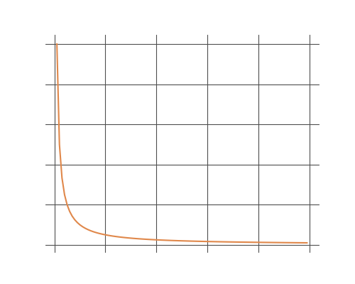

Limits as a mathematical concept is extremely theoretical. This combined with the need for algebraic manipulation of the theoretical constructs that it presents can be very difficult to grasp. Thus it is vital that it be presented with the utmost care and clarity, which is what I have endevaoured to do in this section.
A Conceptualization of Limits
Consider the simple function:
\[y = \frac{1}{x}\]
If we decrease the values of \(x\), the values of \(y\) begin to increase. Subsequently, as \(x\) increases \(y\) gets smaller and smaller but will never truly reach zero. In fact the numbers can get small enough that it may be extremely difficult to represent them mathematically, and so we say that \(x\) approaches infinity (\(\infty\)). This is not a number by which we can operate, but when the function \(\frac{1}{x}\) becomes infinitly large, we can represent it with \(\frac{1}{\infty}\).

The graph produced from this function is very commonly called an asymptote. As \(x\) approaches infinity the x-axis itself becomes tangential to the curve. Likewise, if we were to decrease values of \(x\) to an infinitly small number, the \(y\) values would begin to approach infinity and the y-axis would be tangential to the curve at this point as well. (This is illustrated in the graph above).
Algebraically, this can be expressed as: \[when \ x \to \infty \ , \ \frac{1}{x} \to 0 \] \[when \ x \to 0 \ , \ \frac{1}{x} \to \infty \] Now we arrive at a more interesting question. We have considered the function \(y = \frac{1}{x}\), as values of \(x\) approach \(\infty\), but consider the following function: \[f(x) = \frac{2x}{1 + x}\] What happens as values of \(x\) approach infinity for this function? Moreover, in contemplation of this question, can we derive any meaning from a fraction of the form \(\frac{\infty}{\infty}\)? We can solve this problem as follows: \[f(x) = \frac{2x}{1 + x}\] By dividing the numerator and denominator by \(x\): \[f(x) = \frac{2}{1 + \frac{1}{x}}\] \[Hence, \ x \to \infty \ , \ \frac{1}{x} \to 0\] Consequently, the limit of the function is defined at: \[f(x) = \frac{2}{1 + 0} = 2\] Thus, \(2\) is said to be the limit with which \(\frac{2x}{1 +x}\) approaches infinity. The notation for expressing this limit is as follows: \[\lim_{x \to \infty}\frac{2x}{1 + x} = 2 \]
Algebraically, this can be expressed as: \[when \ x \to \infty \ , \ \frac{1}{x} \to 0 \] \[when \ x \to 0 \ , \ \frac{1}{x} \to \infty \] Now we arrive at a more interesting question. We have considered the function \(y = \frac{1}{x}\), as values of \(x\) approach \(\infty\), but consider the following function: \[f(x) = \frac{2x}{1 + x}\] What happens as values of \(x\) approach infinity for this function? Moreover, in contemplation of this question, can we derive any meaning from a fraction of the form \(\frac{\infty}{\infty}\)? We can solve this problem as follows: \[f(x) = \frac{2x}{1 + x}\] By dividing the numerator and denominator by \(x\): \[f(x) = \frac{2}{1 + \frac{1}{x}}\] \[Hence, \ x \to \infty \ , \ \frac{1}{x} \to 0\] Consequently, the limit of the function is defined at: \[f(x) = \frac{2}{1 + 0} = 2\] Thus, \(2\) is said to be the limit with which \(\frac{2x}{1 +x}\) approaches infinity. The notation for expressing this limit is as follows: \[\lim_{x \to \infty}\frac{2x}{1 + x} = 2 \]
Limits of the form \(\frac{0}{0}\)
The general understanding of limits has been conveyed so far, but there is another special case to consider, and that is the limit of a function of the form \(\frac{0}{0}\). Let us consider the following function:
\[f(x) = \frac{x^2 - 4}{x - 2} \]
It will be noticed, that it would be quite easy to solve this function for any value of \(x\). However, when \(x\) has a value of two, the solution is given by \(\frac{0}{0}\). This is a mathematical impossibility. But lets examine a few solutions that are just shy of \(2\).
\[f(2.1) = \frac{x^2 - 4}{x - 2} = 4.1\]
\[f(2.01) = \frac{x^2 - 4}{x - 2} = 4.01\]
\[f(1.9) = \frac{x^2 - 4}{x - 2} = 3.9\]
\[f(1.99) = \frac{x^2 - 4}{x - 2} = 3.99\]
By examining these results it is easy to see that as \(x\) approaches \(2\), the function \(\frac{x^2 - 4}{x - 2}\) approaches a value of \(4\). Hence:
\[as \ \ \ \ \ x \to 2 \ , \ \frac{x^2 - 4}{x - 2} \to 4 \]
Let us look at a problem that is a bit more theoretical. Consider the function:
\[f(x) = \frac{x^2 - a^2}{x - a} \]
We will note, that as \(x\) approaches \(a\) in value, we get closer to a limit of the form \(\frac{0}{0}\). Let us then express this theoretical approach to \(a\) as \(a + h\). And hence, let:
\[x = a + h\]
In using this approach, our function will always have a clear solution as values of \(x\) will never equal \(a\), but will always maintain a distance of some value '\(h\)'. Substituting into our original function, we get:
\[\frac{(a + h)^2 - a^2}{a + h - a}\]
Reducing to:
\[\frac{2ah + h^2}{h}\]
and dividing by \(h\), we get:
\[f(a + h) = 2a + h\]
and \(f(x)\) is defined for all values of \(x\) than can be represented by \(2a + h\). Hence:
\[\frac{x^2 - a^2}{x - a} = 2a + h\]
As \(x\) approaches \(a\), \(h\) approaches \(0\), and:
\(\frac{x^2 - a^2}{x - a}\) approaches \(2a\). This means that \(2a\) is the limiting value of our function, and this can be expressed as:
\[\lim_{x \to \infty}\frac{x^2 - a^2}{x - a} = 2a \]
Theorems on Limits
The following are four theorems on limits:
1) If two variables are equal, their limits are always equal
2) The limit of the sum of any number of functions is equal to the sum of the limits of separate functions. Hence, if \(u\) and \(v\) are functions of \(x\), then: \[\lim{(u + v)} = \lim{(u)} + \lim{(v)} \] 3) The limit of a product of any number of functions, is equal to the product of the limits of the separate functions. Hence, if \(u\) and \(v\) are functions of \(x\), then: \[\lim{(uv)} = \lim{(u)} * \lim{(v)} \] 4) The limit of the quotient of two functions is equal to the quotient of the limit of the separate functions, provided that the limit of the divisor is non-zero. Hence, if \(u\) and \(v\) are functions of \(x\), then: \[\lim{(\frac{u}{v})} = \frac{\lim{(u)}}{\lim{(v)}} \ \ , \ provided \ \ \lim{(v)} \neq 0 \]
Question: Find the limit of the following function as \(x\) becomes infinite:
\[f(x) = \frac{x^2 + 3x}{2x^2 - 5}\]
Solving:
\[\frac{x^2 + 3x}{2x^2 - 5} = \frac{1 + \frac{3}{x}}{2 - \frac{5}{x^2}} \]
Applying Theorem 4:
\[ = \frac{1 + \lim_{x \to \infty}\frac{3}{x}}{2 - \lim_{x \to \infty}\frac{5}{x^2}} \]
\[ = \frac{1 + 0}{2 - 0}\]
\[ = \frac{1}{2}\]
Hence:
\[\lim_{x \to \infty}\frac{x^2 + 3x}{2x^2 - 5} = \frac{1}{2}\]
1) If two variables are equal, their limits are always equal
2) The limit of the sum of any number of functions is equal to the sum of the limits of separate functions. Hence, if \(u\) and \(v\) are functions of \(x\), then: \[\lim{(u + v)} = \lim{(u)} + \lim{(v)} \] 3) The limit of a product of any number of functions, is equal to the product of the limits of the separate functions. Hence, if \(u\) and \(v\) are functions of \(x\), then: \[\lim{(uv)} = \lim{(u)} * \lim{(v)} \] 4) The limit of the quotient of two functions is equal to the quotient of the limit of the separate functions, provided that the limit of the divisor is non-zero. Hence, if \(u\) and \(v\) are functions of \(x\), then: \[\lim{(\frac{u}{v})} = \frac{\lim{(u)}}{\lim{(v)}} \ \ , \ provided \ \ \lim{(v)} \neq 0 \]
Example: